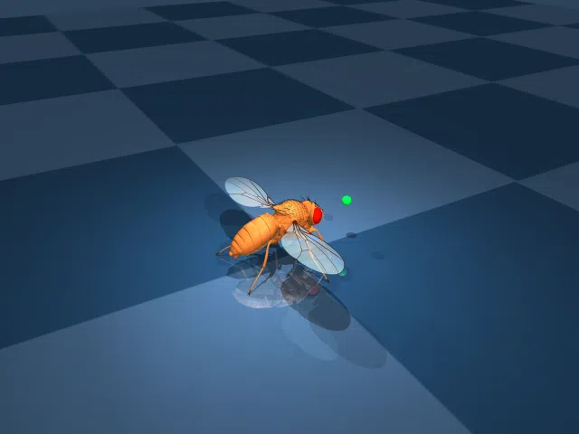

Скорость одинаковая — clip=0.3 насыщает. Отличия в качестве gait: v3 должен быть плавнее (analog vs binary).
Это превращает VNC из дискретного генератора спайков в аналоговый path процессор — сигнал течёт с переменной глубиной, усиливается/ослабляется в каждом нейроне. Ходьба без мозга — это path, а не последовательность спайков.